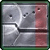
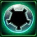
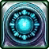
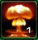

- Stats
- Production
- Abilities/Upgrades
- Strategy
- Lore
- Related
Armor: 1 |
3 with  Building Armor
Mineral Repair Cost:
 37.5
37.5Gas Repair Cost:
 12.5
12.5Repair Time:
 40
40 0/0 0 per second
0/0 0 per secondDamage: 0
Attacks: 0
Cooldown: 0
Targets: None
Attack Range: 0
Acceleration: 0
Collision Radius: 1.5
Requirements: Nothing
| Level | Level 1 | Level 2 | Level 3 |
| Minerals | 0 | 0 | 0 |
| Vespene Gas | 0 | 0 | 0 |
| Time | 0 | 0 | 0 |
| Damage Bonus | 0 | 0 | 0 |
| Total Damage | 0 | 0 | 0 |
150Vespene Cost:
50Supply:
 0
0Produced From: SCV Build Time:
40Requirements: Barracks
Unit Type: Armored, Mechanical, Structure, Ground
Requirements: Nothing
| Level | Level 1 | Level 2 | Level 3 |
| Minerals | 0 | 0 | 0 |
| Vespene Gas | 0 | 0 | 0 |
| Time | 0 | 0 | 0 |
| Armor Bonus | 0 | 0 | 0 |
| Total Armor | 1 | 1 | 1 |
| Upgrade | Icon | Minerals | Vespene Gas | Time | Requirements |
| Personal Cloaking |  | 150 | 150 | 120 | Ghost Academy |
| Moebius Reactor |  | 100 | 100 | 80 | Ghost Academy |
| Arm Nuke |  | 100 | 100 | 60 | Nuke Slot & Factory |
Moebius Reactor: Increases the Ghost's starting to energy to 75.
Arm Nuke: Builds a Nuke in the Ghost Academy. Requires a Factory and only one can be built per Ghost Academy.
| Icon | Minerals | Vespene Gas | Research Time | Researched At |
| 150 | 150 | 140 | Engineering Bay |
Information: Building Armor increases the armor of all Terran buildings by 2. This includes the Point Defense Drone and Auto-Turret as well.
If you have any suggestions for more strategies, go ahead and post on the forums 'here'!
+1 Weapons vs Zerglings
When Zealots have a +1 weapon advantage versus Zerglings, they will kill Zerglings in two attacks instead of three. This makes Zealots very effecient against Zerglings until the zerg catches up in armor upgrades.
Because of this, there are a handful of timing attack that take advantage of the effecient +1 weapon zealots, forcing the zerg to make spines, roaches, or some other unit than zerglings unless the zerg wants to trade inefficiently.
+1 Weapons vs Zerglings
Sum text about how gosu this is
+1 Weapons vs Zerglings
Sum text about how gosu this is
- History
- Training
Terran Confederacy
Prior to the Great War the Academy was located on Tarsonis. A statue of Major General Brantigan Fole was placed in front. The Confederate Academy was used to conduct secret research on the zerg.
The Academy was destroyed during a high-profile raid by the Sons of Korhal that made the rebel group, and its leader, Arcturus Mengsk, notorious. At the time the post commander was Major Rumm.
The facility was restored on Tarsonis only to be destroyed during the zerg invasion of the planet.
Terran Dominion
The Terran Dominion rebuilt the Academy and moved it to Ursa. The Ghost Academy is not considered a secret organization, but has been promoted as a wholly positive institution where psychic children are taught to control their powers. The secrets of the Academy are being targeted by former Dominion senator Corbin Phash and Umojan Protectorate minister Jorgensen.
The installation is assisted by "Sparky", a computer system which monitors training, communication and security. The Dominion keeps zerg as experimental test subjects at the Academy.
The Ghost Academy is the administrative and training center for the Terran Confederate and Terran Dominion Ghost Programs.
Ghost trainees must have a PI rating of at least 5 and must be literate before they can begin training.
Ghosts spen an average of four years at the Academy. Attempting to speed the process resulted in "bad" ghosts. Most of the instructors, like the Program director, were non-psychics.
Under the Dominion, most of the training is done by preceptors who teach various topics. Students are assigned "class" ratings, first through fourth. First-class students have more experience and are responsible for training lower-class students.
Following the escape of Corbin Phash and his propaganda campaign, the Ghost Academy began training students in groups on the recommendation of Superintendent Sarco Angelini. While Angelini believed this resulted in a superior training technique, Emperor Arcturus Mengsk was only interested in the public relations value.
The Dominion ordered a new graduation exercise component to the program, and Nova Terra was the first to undergo one. She was ordered to terminate a rebel movement. She succeeded.
Upon entry to the academy, a ghost's past life is considered irrelevant. Under the Dominion, it is still possible for a trainee to maintain correspondance with family prior to mind wipe.
Source Information
Text information from the Starcraft Wiki.
Photo 1 created by Saejin Oh. Copyright: UDON Entertainment.
Photo 2 created by Samwise Didier. Copyright: Blizzard Entertainment.
| Terran |
| Units |
| Command Center | SCV | Mule |
| Barracks | Marine | Marauder | Ghost | Reaper |
| Factory | Hellion | Siege Tank | Thor |
| Starport | Medivac | Viking | Banshee | Raven | Battlecruiser |
| Structures |
| Basic Buildings | Command Center | Orbital Command | Supply Depot | Refinery |
| Defensive Buildings | Planetary Fortress | Bunker | Missile Turret | Sensor Tower |
| Infantry Buildings | Barracks | Engineering Bay | Ghost Academy |
| Mechanical Buildings | Factory | Starport | Armory | Fusion Core |
| Add-ons/Spawned | Auto-Turret | Point Defense Drone | Tech Lab | Reactor |